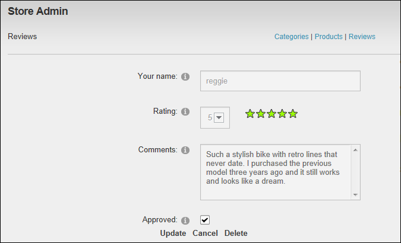

Approving Product Reviews
Catalog Managers can approve one or more store product reviews using the Store Admin module. Reviews can be submitted to the Store by all users; however they do not appear until they are authorized.
- On the Store Admin module, click the Reviews link.
- Recommended. At Status, select Not Approved.
- Optional. Filter reviews by Category and/or Product as required. See "Filtering Product Reviews"
- Click the Edit link beside the required review.

- Optional. In the Comments text box, edit the comments if required.
- At Approved, to approve the review and display it on the product detail page.

- Click the Update link to approve this comment.
- Repeat Steps 3-7 to approve additional reviews.